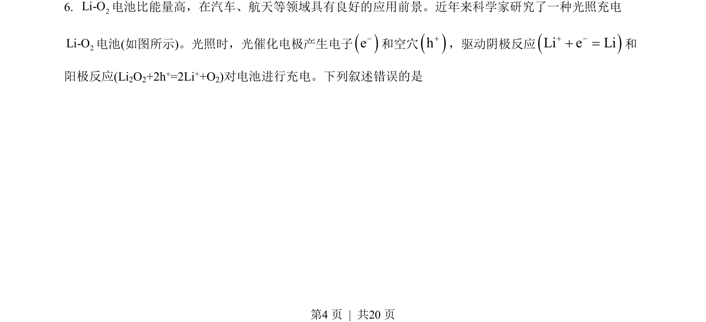
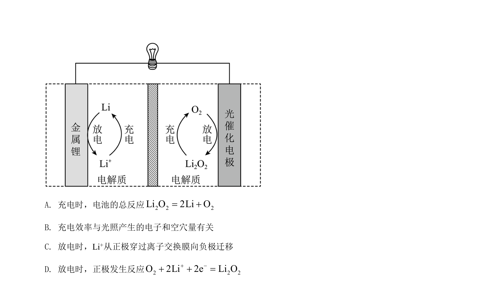
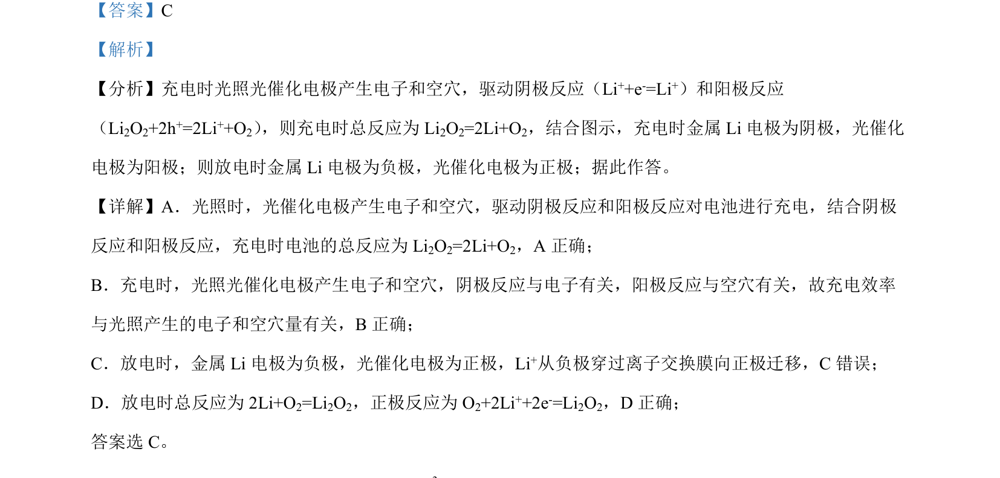

2022-全国乙-06
吉林2022卷全国乙不分题6题型选择难中
考点：电化学 电极反应 离子迁移 充放电原理
题面


摘要
本题考查锂氧电池充放电过程中的电极反应、总反应及离子迁移方向判断。
关联考点
答案与解析

📄 原 PDF 第 4 页：素材/真题/吉林/2008-2024·（吉林）化学高考真题/2022年高考化学试卷（全国乙卷）（解析卷）.pdf
题干文本
- 2Li-O电池比能量高，在汽车、航天等领域具有良好的应用前景。近年来科学家研究了一种光照充电
2Li-O电池(如图所示)。光照时，光催化电极产生电子e-和空穴h+，驱动阴极反应Li e Li+ -+ =和
阳极反应(Li2O2+2h+=2Li++O2)对电池进行充电。下列叙述错误的是
为
解析文本